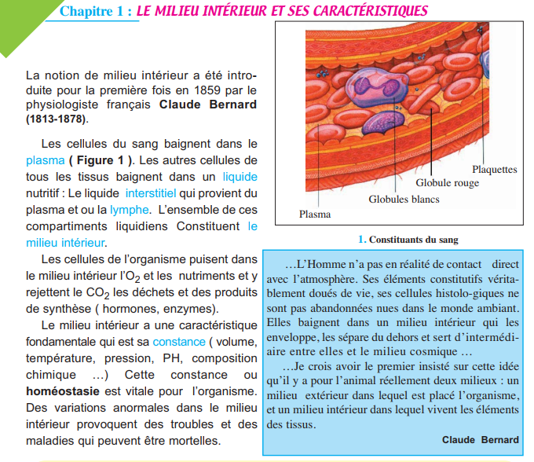
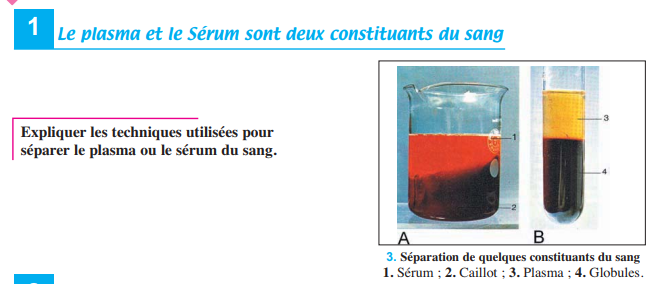
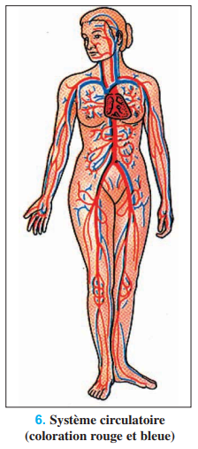
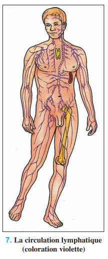
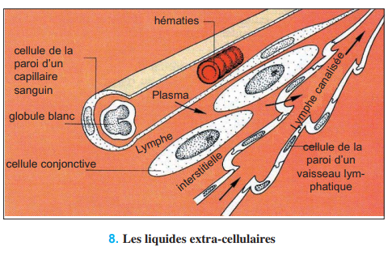
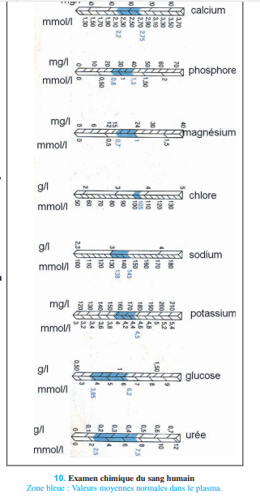

D'après le programme officiel tunisien (Thème 1, Partie IV), ce chapitre vise à :
1 Distinguer les compartiments liquidiens
2 Reconnaître la composition du milieu intérieur
3 Saisir la signification de « constance du milieu intérieur »
4 Argumenter la nécessité de cette constance
📚 Situation Problème (p.117)
La notion de milieu intérieur a été introduite en 1859 par le physiologiste français Claude Bernard (1813-1878). Les cellules du sang baignent dans le plasma. Toutes les autres cellules de l'organisme baignent dans le liquide interstitiel (ou lymphe interstitielle), qui provient du plasma. L'ensemble de ces compartiments liquidiens constitue le milieu intérieur. Les cellules y puisent O₂ et nutriments, et y rejettent CO₂ et déchets. Sa caractéristique fondamentale est sa constance (ou homéostasie) — volume, température, pression, pH, composition chimique. Des variations anormales provoquent des troubles et des maladies pouvant être mortelles.

📷 Doc.1 — 1. Constituants du sang : hématies, leucocytes, thrombocytes, plasma (p.117)
'">
📚 Préacquis (p.119)
Le plasma est la fraction liquide du sang obtenue par centrifugation avec anticoagulant. Le sérum est le liquide obtenu après coagulation (plasma SANS fibrinogène). L'absorption intestinale (Ch.3) fait passer les nutriments dans le sang et la lymphe au niveau des villosités intestinales. Le sang artériel (riche en O₂) provient du cœur et va vers les organes ; le sang veineux (riche en CO₂) revient des organes vers le cœur.

📷 Doc.2 — 3. Séparation de quelques constituants du sang : sérum, caillot, plasma, globules (p.119)
'">
✏️ Mini-quiz — Préacquis
1. Le plasma s'obtient par centrifugation avec .
2. Le sérum = plasma privé de .
💡 À retenir : Claude Bernard disait : « La fixité du milieu intérieur est la condition de la vie libre. » Contrairement aux animaux à sang froid (température variable selon le milieu), les mammifères et les oiseaux maintiennent leur milieu intérieur constant, ce qui leur permet une activité indépendante des conditions extérieures. Cette homéostasie est une conquête évolutive majeure.
❓ 2 Questions directrices (p.118)
Quelles sont les constantes biologiques du milieu intérieur ?
Quelles relations y a-t-il entre ces constantes et la santé de l'organisme ?
🧠 Comprendre avant de mémoriser
Le milieu intérieur est constitué des liquides extracellulaires : plasma (sang), lymphe (canalisée) et liquide interstitiel (entre les cellules). Ces compartiments communiquent entre eux et assurent les échanges avec les cellules. Le milieu intérieur se caractérise par la constance (homéostasie) de ses paramètres physico-chimiques : glycémie (0,7-1,1 g/l), calcémie (0,10 g/l), pH (7,35-7,45), température (37°C), pression artérielle (12,5/8), volémie (≈70 ml/kg). Toute variation anormale de ces constantes est à l'origine de pathologies parfois mortelles.
Clique sur chaque notion · Pièges CAPES et connexions révélés
💧
Compartiments
Plasma · Lymphe · Interstitiel
🧪
Composition
Eau · Sels · Protéines · Glucose
📊
Constantes
Glycémie · pH · T° · Pression
⚠️
3 Pièges
Erreurs fréquentes
🔗
Connexions
Ch.3 · Ch.4 · Ch.8
💧 Les compartiments du milieu intérieur
Le milieu intérieur = liquides extracellulaires : Plasma (sang) → Lymphe canalisée → Liquide interstitiel (entre les cellules). Le milieu intracellulaire (cytosol) n'en fait PAS partie. Échanges : Plasma ↔ Lymphe interstitielle ↔ Cellules.
🧪 Composition du plasma
Constituant
Pourcentage
Eau
≈ 90%
Sels minéraux (Na⁺, K⁺, Ca²⁺, Cl⁻...)
≈ 0,9%
Protéines (albumine, globulines, fibrinogène)
65-75 g/l
Glucose
0,8-1,1 g/l
📊 Les principales constantes biologiques
Constante
Valeur normale
Pathologies
Glycémie
0,7-1,1 g/l
Hyperglycémie (diabète) / Hypoglycémie (coma)
Calcémie
0,10 g/l
Hypercalcémie (dépôts) / Hypocalcémie (tétanie)
pH sanguin
7,35-7,45
Acidose / Alcalose
Température
37°C (36,4-37,2)
Hyperthermie (fièvre) / Hypothermie
Pression artérielle
12,5/8
Hypertension (AVC) / Hypotension (syncope)
Volémie
≈ 70 ml/kg
Hémorragie → chute pression
⚠️ 3 Pièges du CAPES
⚠️ Ne pas confondre plasma et sérum ▼
Le plasma = liquide sanguin AVEC fibrinogène (obtenu par centrifugation avec anticoagulant). Le sérum = plasma SANS fibrinogène (obtenu après coagulation). Le sérum ne coagule plus ; le plasma, si.
⚠️ Milieu intérieur ≠ Milieu intracellulaire ▼
Le milieu intérieur = liquides extracellulaires uniquement (plasma + lymphe + liquide interstitiel). Le milieu intracellulaire (cytosol) n'en fait PAS partie. C'est une distinction fondamentale posée par Claude Bernard.
⚠️ Constance ≠ fixité absolue ▼
Les constantes fluctuent dans une fourchette de valeurs normales. La glycémie varie après un repas sans être pathologique. C'est le dépassement durable des bornes (ex : glycémie > 1,26 g/l à jeun) qui signe la pathologie. L'homéostasie = stabilité dynamique, pas fixité.
🔗 Connexions
← Ch.3 — Absorption
Les nutriments absorbés (Ch.3) passent dans le sang et la lymphe → milieu intérieur.
→ Ch.8 — Excrétion urinaire
Le rein (Ch.8) régule la composition du milieu intérieur en éliminant les déchets.
💭 Réflexion
1. Pourquoi une hémorragie grave peut-elle entraîner un arrêt cardiaque ?
L'hémorragie diminue la volémie (volume sanguin). La baisse de volémie entraîne une chute de la pression artérielle (hypotension). Le cœur et le cerveau sont alors moins irrigués → moins d'O₂ et de glucose → le cœur peut s'arrêter (syncope cardiaque). C'est une illustration dramatique de la nécessité de maintenir constant le volume du milieu intérieur.
💧 Activité 1 — Les différents compartiments liquidiens (p.120)
Plasma, Lymphe, Liquide interstitiel
L'organisme contient trois compartiments liquidiens extracellulaires en perpétuelle communication : le plasma (sang), la lymphe (circule dans les vaisseaux lymphatiques) et le liquide interstitiel (ou lymphe interstitielle, entre les cellules). Ces liquides constituent ensemble le milieu intérieur.

📷 Doc.5 — 6. Système circulatoire — sang (coloration rouge et bleue) (p.120)
'">

📷 Doc.6 — 7. La circulation lymphatique (coloration violette) (p.120)
'">

📷 Doc.7 — 8. Les liquides extra-cellulaires : schéma des compartiments (p.120)'">
Comparaison plasma/lymphe : La lymphe a une composition très proche du plasma, MAIS elle est dépourvue de protéines (0 g/l contre 70 g/l dans le plasma). Les concentrations en ions (Na⁺, K⁺, Ca²⁺, Cl⁻) et en glucose sont quasiment identiques. Cette différence en protéines s'explique par la filtration : les grosses molécules protéiques ne traversent pas la paroi des capillaires sanguins.
✏️ Mini-quiz — Activité 1
1. Le milieu intérieur comprend .
2. La lymphe diffère du plasma par l'absence de .
3. Le liquide interstitiel se situe .
💡 À retenir : La circulation (sanguine et lymphatique) assure le renouvellement permanent du milieu intérieur. Le plasma filtré à travers les capillaires donne le liquide interstitiel, qui est drainé par les vaisseaux lymphatiques pour former la lymphe canalisée. Celle-ci est finalement déversée dans le sang au niveau de la veine cave supérieure. Ce cycle perpétuel maintient l'homéostasie et permet les échanges cellulaires.
🧪 Activité 2 — Mise en évidence des constituants du plasma (p.121)
Les substances minérales et organiques du plasma
Le plasma est une solution aqueuse complexe contenant environ 90% d'eau, des sels minéraux (chlorures, phosphates, sulfates, calcium, potassium, sodium) et des substances organiques (protéines, glucose, urée, lipides). Sa composition est remarquablement constante chez un individu sain.
Substances MINÉRALES
Eau
Mise en évidence par chauffage du plasma (dépôt sur paroi froide)
Chlorures (Cl⁻)
Ajout de HNO₃ puis AgNO₃ → précipité blanc de AgCl
Liqueur de Fehling à chaud → précipité rouge brique (sucre réducteur)
✏️ Mini-quiz — Activité 2
1. La réaction de Biuret met en évidence .
2. Le glucose est mis en évidence par .
3. Les ions chlorures (Cl⁻) sont détectés par .
💡 À retenir : L'analyse du plasma sanguin constitue un outil diagnostique fondamental en médecine. La présence anormale de certaines molécules (glucose en excès = diabète, créatinine élevée = insuffisance rénale) ou l'absence d'autres (protéines = malnutrition) oriente le diagnostic. Les tests biochimiques de mise en évidence sont les mêmes que ceux utilisés pour les aliments (Ch.2-3) — logique puisque les nutriments absorbés se retrouvent dans le plasma.
📊 Activité 3 — Les constantes biologiques (p.122-124)
Indicateurs de l'état de santé
Les constantes biologiques sont des paramètres physico-chimiques du milieu intérieur qui restent remarquablement stables chez l'individu sain. Leur mesure permet d'évaluer l'état de santé : toute variation anormale signale une pathologie.

📷 Doc.9 — 10. Examen chimique du sang humain — Zone bleue : Valeurs moyennes normales dans le plasma (p.122)
'">
Constante
Valeur normale
Pathologie par excès
Pathologie par défaut
Fer sanguin
—
Hémochromatose : surcharge en fer, fibrose hépatique
Anémie ferriprive : hématies pâles et peu nombreuses, manque d'O₂
🔍 Notion de constante biologique : Une constante biologique est une valeur physiologique de référence qui fluctue dans une fourchette étroite. Les variations physiologiques (repas pour la glycémie, exercice pour la température) sont normales. C'est le dépassement durable des valeurs limites qui définit l'état pathologique. Exemple : glycémie à jeun > 1,26 g/l = diabète.
✏️ Mini-quiz — Activité 3
1. La glycémie normale est de .
2. Une température de 39°C correspond à une .
3. Le pH sanguin normal est .
4. Une carence en fer entraîne .
💡 À retenir : Les constantes biologiques sont regroupées en constantes chimiques (glycémie, calcémie, pH, fer) et constantes physiques (température, pression artérielle, volémie). Leur maintien — l'homéostasie — est assuré par des mécanismes de régulation complexes (nerveux et hormonaux) qui seront étudiés dans les chapitres suivants (Ch.8 : régulation rénale, Ch.9 : régulation de la glycémie).